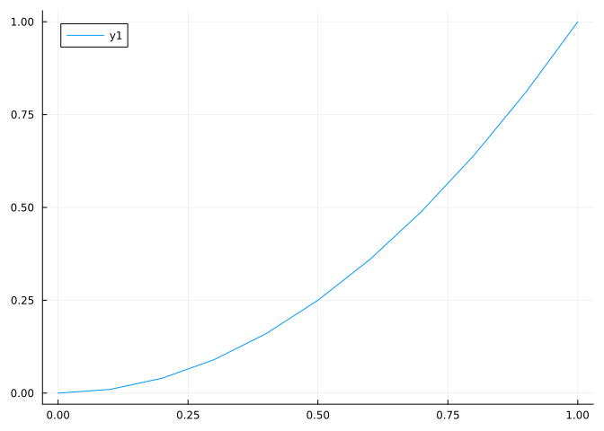
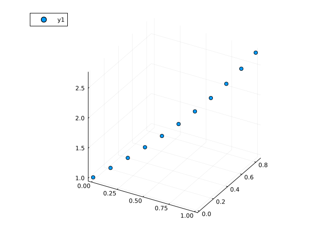
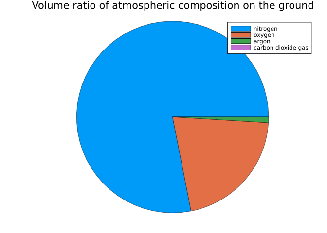

using Plotsmysite
Juliaのパッケージ
インストールするには、JuliaのREPLでusing Pkg; Pkg.add("Plots")を実行してください。
実行時には、以下のように読み込んでください。
Plotsとは？
数字だけ見てもデータの意味が分かりにくいことが多いので、グラフの利用は数値計算の分野では重要です。
例えば、乱数を生成するrand関数で作った３次元の点群がどのようになっているかを数字とグラフでそれぞれ表示してみます。
using Random
Random.seed!(0)
n = 100
x, y, z = rand(n), rand(n), rand(n)
display.([x', y', x'])
;1×100 adjoint(::Vector{Float64}) with eltype Float64:
0.455238 0.547642 0.773354 0.940585 … 0.351491 0.193291 0.1169891×100 adjoint(::Vector{Float64}) with eltype Float64:
0.655636 0.774666 0.781732 0.55538 … 0.355375 0.524008 0.2799071×100 adjoint(::Vector{Float64}) with eltype Float64:
0.455238 0.547642 0.773354 0.940585 … 0.351491 0.193291 0.116989using Plots
scatter(x, y, z)勿論、グラフの方が分かりやすいと思います。
このように、Plotsでは、数値を可視化する機能が複数用意されています。
折れ線グラフplot, plot!
plotは連続的なデータや関数の表示が得意な関数です。 基本的には、折れ線グラフの表示を行いますが、他のプロットにも使える多機能な関数です。
関数のプロット
以下のように、関数をプロットできます。
plt = plot(sin)
plot!(plt, cos) # 重ねて描く
display(plt)
;データのプロット
データの点群を与えると、直線で結んで表示してくれます。
x = 0:0.1:1
y = (n -> n^2).(x)
plt1 = plot(x, y)
散布図scatter, scatter!
scatterは散布図を作成する関数です。 散布図とは、データを散らしたグラフのことです。
データのプロット
以下のようにして使えます。
# 2dimプロット
x = 0:0.1:1
y = (n -> n^2).(x)
scatter(x, y)
# 3dimプロット
x = 0:0.1:1
y = sin.(x)
z = exp.(x)
plt2 = scatter(x, y, z)
display.([plt1, plt2])
;
円グラフpie
円グラフを作成できます。
データの表示
x = ["nitrogen", "oxygen", "argon", "carbon dioxide gas"]
y = [78.11, 20.96, 0.9343, 0.03]
plt = pie(x, y, title="Volume ratio of atmospheric composition on the ground",l = 0.5)
display(plt)
;
棒グラフbar
棒グラフを作成できます。
x = ["A", "B", "C", "D"] # x軸のラベル
y = [3, 5, 2, 7] # 各バーの高さ
bar(x, y)プロットやグラフの整形方法
グラフにタイトルを付けたいとき、描画範囲を指定したいとき、方対数グラフを作りたいときなど、参考にしてください。
そのプロット全体に適用
グラフのタイトルをつける
title = "Title"グラフの範囲を決める
xlims = (1.0^-5. 1)ylims = (0, 1)グラフのフォントサイズを設定する
tickfontsize = 20グラフの軸を対数にする
xaxis = :logyaxis = :logグラフを箱で囲む
framestyle = :boxグラフに指定の目盛りを付ける
yticks = [0, 10, 20, 30, 40, 50]グラフのアスペクト比を制御する。
aspect_ratio = 1.0
そのグラフに適用
グラフの凡例ラベルをつける
label = "func"線の色を変更する
linecolor = :redグラフの線の長さを決める
linewidth = 3マーカーを設定する。
markershape = :x
プロットテクニック
テンプレート
適当に全部詰めたテンプレートが以下の通りです。 要らないものは消してください。
plt = plot(
title = "ThisIsTitle", # タイトル
xlims = (-10, 10), # xの範囲
ylims = (1e-1, 1e10), # yの範囲
tickfontsize = 5, # フォントサイズ
yaxis = :log, # y軸方対数グラフ
framestyle = :box, # 枠で囲む
yticks= exp.((0:10) .^ 2) # 目盛り
)
plot!(plt, x -> exp(x^2),
label = "exp(x^2)", # 凡例のラベル
linecolor = :red, # 赤い線
linewidth = 2, # 線の太さ
markershape = :x # マーカーの設定
)対数の下駄履かせ
イテレーションの回数などのパラメータを変化させていった時の相対誤差をプロットしたいときなど、対数プロットをしたいときがあると思います。
コンピュータの計算では、誤差の計算結果が0になることはよくあるため、結果に下駄を履かせないとプロットが正確に行われない場合があります。
このとき、計算結果が0のデータは正常に表示できないため、以下のようにepsを足して下駄を履かせることで、プロットを正常に行えます。
例えば、以下はsin関数を \(n3\) 次のマクローリン展開で近似した関数sin_macとの相対誤差のグラフです。
function sin_mac(n, x)
q = p = x; k = round(n/2) - 1
for i = 1:k
q = q * ((- 1) / ( (2*i) * (2*i + 1))) * x^2; p = p + q
end
return p
end
x = range(-10π, 10π, 1000)
y = sin_mac.(10, x)
y_t = sin.(x)
eps = 1e-19
relerr_y = abs.((y_t - y) ./ y) .+ eps
plot(x, relerr_y, yaxis=:log, ylims=(1e-10, 1e1))